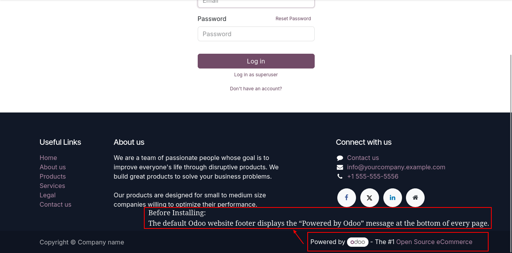
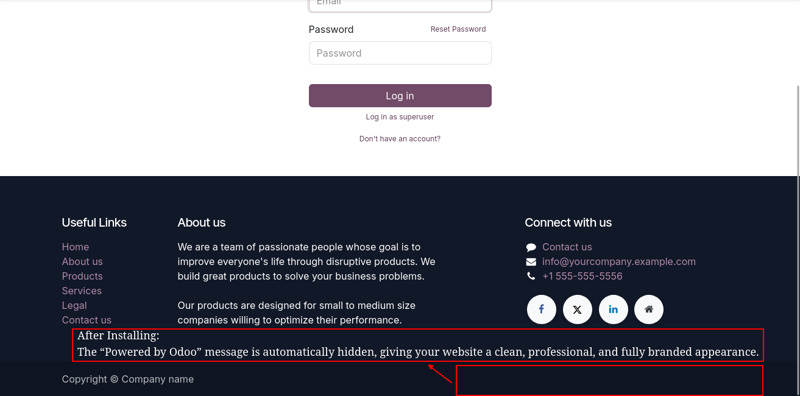

The Website Hide Powered by Odoo Message module allows you to easily remove the default “Powered by Odoo” text from your website footer. This helps make your website look more professional and fully aligned with your brand identity — without editing core files or themes.
The default Odoo website footer displays the “Powered by Odoo” message at the bottom of each page.
After installation, the “Powered by Odoo” message is hidden automatically, resulting in a clean and professional footer that reflects your brand.
We specialize in Odoo Website modules, eCommerce extensions, and ERP business solutions. Contact us for support, customization, or integration assistance.
✉️ Get in Touch